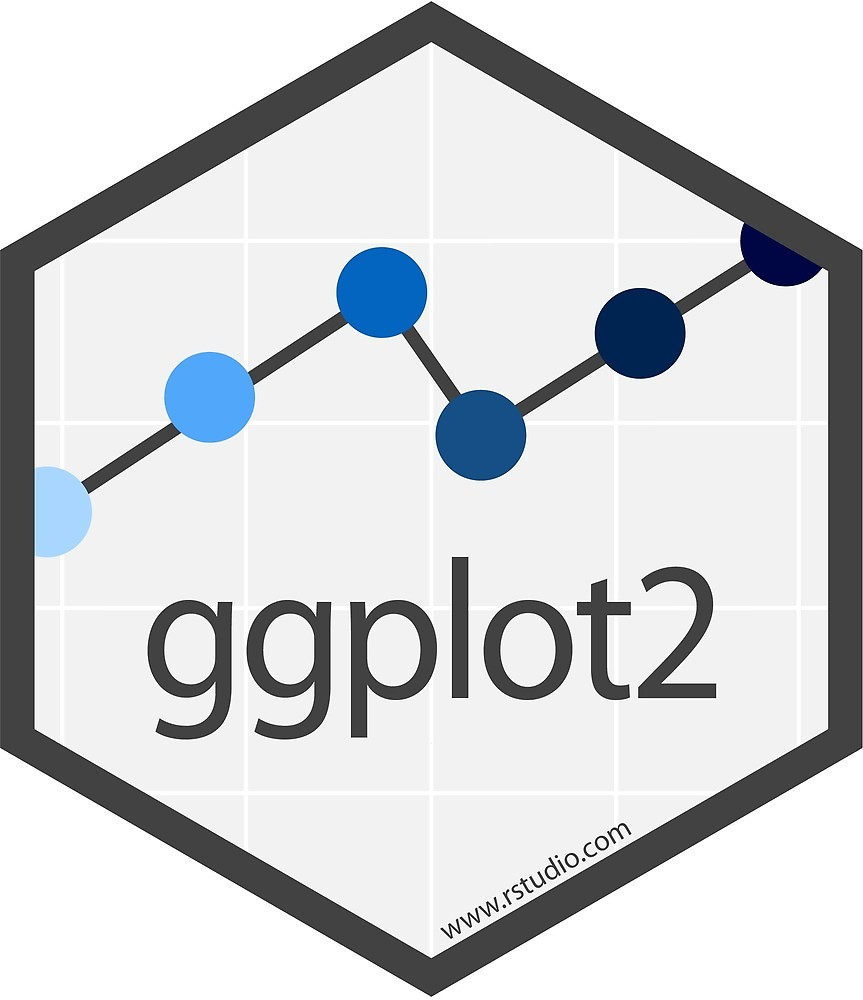
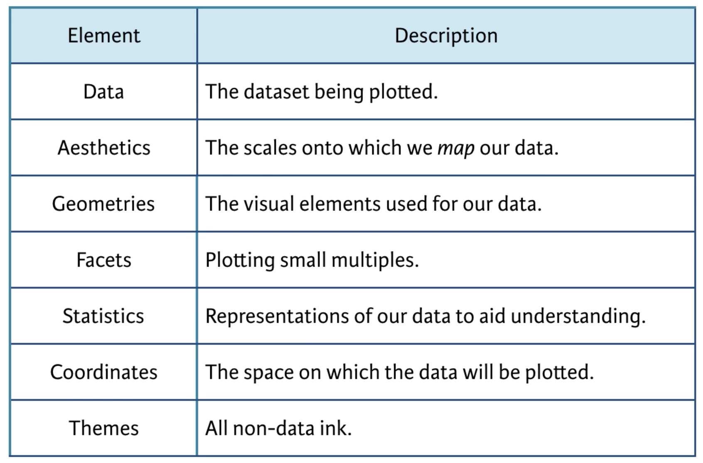
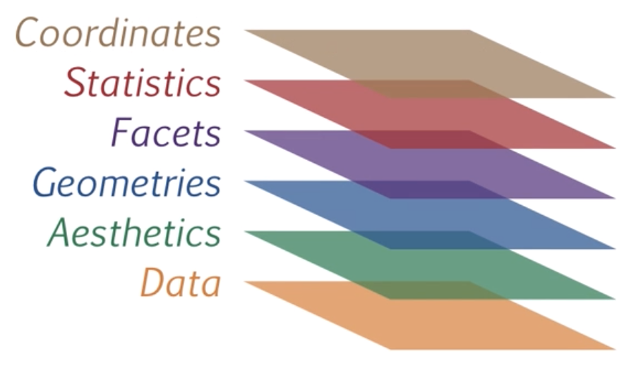

penguins <- penguinsClass 4: Graphical Visualization
Graphical visualization is an essential skill for anyone working with data and requires a combination of design principles with statistical understanding. In general there are two purposes for needing to graphically visualize data:
- Data exploration: It is difficult to fully understand your data just by looking at numbers on a screen arranged in rows and columns. Being skilled in the graphical visualization of data will help you better understand patterns and relationships that exist in your data.
- Explain and Communicate: Graphical visualization is the most effective way of explaining and communicating your statistical findings to colleagues, in scientific presentations and publications, and especially to a broader non-academic audience.
ggplot2
In this class, we will learn about the fundamentals of graphical visualization using the ggplot2 package. This is by far the most popular package for graphical visualization in R.

You have already seen and used ggplot2 in previous classes, but now we will cover how to actually use this package. The elements for creating a ggplot was largely inspired from the work of Leland Wilkinson (Grammar of Graphics, 1999), who formalized two main principles in plotting data:
- Layering: The idea of layering involves building plots by adding different layers of grammatical elements. Each layer can consist of components such as points, lines, bars, etc., and can be combined to create complex plots.
- Mapping: This principle involves mapping variables in your data to aesthetic properties of the graphical objects, such as size, shape, color, position, and the scales on the x and y axes.
In this framework, the essential grammatical elements required to create any visualization are:
Let’s take a look at how these elements work to create a simple visualization of data. In Class 1 I introduced you to the fun palmerpenguins data set. I will use this data set to illustrate how ggplot2 works.

Go ahead and load the palmerpenguins and ggplot2 packages using library() . Additionally, let’s make the penguins data set that is loaded with palmerpenguins visible in the environment by explicitly assigning it to an object.
Data layer
The Data Layer specifies the data object that is being plotted.

It is the first grammatical element that is required to create a plot:
ggplot(data = penguins)
You can see that we only have a blank square. This is because we have not added any other layers yet, we have only specified the data layer. ggplot() doesn’t yet know how to map the variables onto the axis scales. That is where the aesthetic mapping layer comes in.
Aesthetics Layer
The next grammatical element is the aesthetic layer, or aes for short. This layer specifies how we want to map our data onto the scales of the plot.
The aesthetic layer maps variables in our data onto scales in our graphical visualization, such as the x and y coordinates. In ggplot2 the aesthetic layer is specified using the aes() function. Let’s create a plot of the relationship between bill_length_mm and flipper_length_mm, putting them on the x and y axis respectively.
ggplot(penguins,
mapping = aes(x = bill_length_mm, y = flipper_length_mm))
You can see we went from a blank box to a graph with the variable and scales of bill_length_mm mapped onto the x-axis and flipper_length_mm on the y-axis.
The aesthetic layer also maps variables in our data to other elements in our graphical visualization, such as color, size, fill, etc. These other elements are useful for adding a third variable onto our graphical visualizations. For instance, we can add the variable of species by mapping species onto the color aesthetic.
ggplot(penguins,
mapping = aes(bill_length_mm, flipper_length_mm, color = species))
You will notice that the plot has not changed. Species is not plotted by color. This is because ggplot() does not know the geometrical form the data should take - a bar plot, line plot, dot plot, etc.? It cannot add color to a geometrical form that is not specified yet. That is where the geometries layer comes in.
Geometries Layer
The next essential grammatical element for graphical visualization is the geometries layer or geom for short. This layer specifies the visual elements that should be used to plot the actual data.

There are a lot of different types of geoms to use in ggplot2. Some of the most commonly used ones are:
Points or jittered points:
geom_point()orgeom_jitter()Lines:
geom_line()Bars:
geom_bar()Violin:
geom_violin()Error bars:
geom_errobar()orgeom_ribbon()
For a full list see the ggplot2 documentation
For now, let’s demonstrate this using geom_point(). We will create what is called a scatterplot - plotting the individual data points for two continuous variables.
To create a scatterplot we can simply add geom_point() to our ggplot.
Note
Note that in ggplot2 there is a special notation that is similar to the pipe operator |> seen before. Except in ggplot2 you have to use a plus sign + .
ggplot(penguins,
aes(bill_length_mm, flipper_length_mm, color = species)) +
geom_point()
Note you can also specify the color = species aesthetic mapping on the geometric layer instead of the data layer:
ggplot(penguins, aes(bill_length_mm, flipper_length_mm)) +
geom_point(mapping = aes(color = species))So you can see that the three essential grammatical elements for any graphical visualization are:
Data
Aesthetics
Geometries
However, there are often other types of elements you may want to include.

Facets Layer
The facets layer allows you to create panels of subplots within the same graphic object

The previous three layers are the essential layers. The facet layer is not essential, but it can be useful when you want to communicate the relationship among 4 or more variables.
Let’s create a facet layer of our scatterplot with different panels for sex
# first let's remove any missing values for sex
library(dplyr)
penguins <- filter(penguins, !is.na(sex))
ggplot(penguins,
aes(bill_length_mm, flipper_length_mm, color = species)) +
geom_point() +
facet_wrap(vars(sex))
You can see we are now conveying information about 4 different variables in our data; bill_length_mm, flipper_length_mm, species, and sex .
Statistics Layer
The statistics layer allows you plot aggregated statistical values calculated from your data

The statistics layer is used in combination with a geom to plot values that are a function (e.g., mean) of the values in your data. The two main stat functions are:
stat_smooth()stat_summary()
stat_smooth(method = "lm") is used in scatterplots to plot the regression line on your data.
ggplot(penguins, aes(x = bill_length_mm, y = flipper_length_mm)) +
geom_point() +
stat_smooth(method = "lm")
You can add separate regression lines if other variables are mapped to aesthetics and/or are wrapped in different facets
ggplot(penguins,
aes(bill_length_mm, flipper_length_mm, color = species)) +
geom_point() +
facet_wrap(vars(sex)) +
stat_smooth(method = "lm")
stat_summary() can be used to plot things like the mean values in your data. There are two main arguments you need to specify in stat_summary():
fun: The function used to calculate an aggregated summary statistic. Functions like mean, sum, min, max, sd can all be specified. You can then specify additional argument that should be passed into these functions as regular arguments in
stat_summary(). E.g.,stat_summary(fun = mean, na.rm = TRUE)geom: The geometical element,
geom_(), you want to use as the visual element for the summary statistic.
In the penguins data set, we have the raw values for each individual penguin but perhaps we are just interested in the average (mean) values for each species. This can be done easily using stat_sumary()
ggplot(penguins, aes(species, flipper_length_mm)) +
stat_summary(fun = mean, geom = "point")
Using a combination of geom_jitter() and stat_summary() you can plot both the raw values for each individual penguin and the mean values for each species:
ggplot(penguins, aes(species, flipper_length_mm)) +
geom_jitter(width = .1, size = .75, alpha = .2) +
stat_summary(fun = mean, geom = "point",
size = 4, color = "steelblue")
The stat_summary(fun = ) argument returns only a single summary statistic value (e.g., a mean). However, there are cases when you will want to return more than one value, for instance when plotting errorbars you will need both ymin and ymax values returned. For these types of cases, you need to use the fun.data argument instead:
mean_cl_normal is a function to calculate 95% confidence limits from your data.
ggplot(penguins, aes(species, flipper_length_mm)) +
stat_summary(fun = mean, geom = "point") +
stat_summary(fun.data = mean_cl_normal, geom = "errorbar", width = .1)
Coordinates Layer
The coordinate layer allows you to adjust the x and y coordinates

There are two main groups of functions that are useful for adjusting the x and y coordinates.
coord_cartesian()for adjusting the axis limits (zoom in and out)scale_x_andscale_y_for setting the axis ticks and labels
axis limits
You can adjust limits (min and max) of the x and y axes using the coord_cartesian(xlim = c(), ylim = c()) function.
Note
If you want to compare two separate graphs, then they need to be on the same scale. This an important design principle in graphical visualization.
Compare these two sets of plots
male <- filter(penguins, sex == "male")
female <- filter(penguins, sex == "female")
p1 <- ggplot(male, aes(species, body_mass_g)) +
stat_summary(fun = mean, geom = "point") +
stat_summary(fun.data = mean_cl_normal, geom = "errorbar", width = .1) +
coord_cartesian(ylim = c(2000, 10000))
p2 <- ggplot(female, aes(species, body_mass_g)) +
stat_summary(fun = mean, geom = "point") +
stat_summary(fun.data = mean_cl_normal, geom = "errorbar", width = .1) +
coord_cartesian(ylim = c(3000, 5000))# patchwork can be used to combine multiple plots into one image
library(patchwork)
p1 + labs(title = "male") + p2 + labs(title = "female")
A cursory look at this plot, you might conclude a couple things
Female Gentoo penguins have the largest body mass
There is a larger difference in body mass, relative to the other penguin species, for the Female Gentoo penguins than for Male Gentoo penguins.
These are both false! Take a closer look at the y-axis on the two plots. Let’s plot the exact same data but make the scales on the y-axis the same.
p1 <- ggplot(male, aes(species, body_mass_g)) +
stat_summary(fun = mean, geom = "point") +
stat_summary(fun.data = mean_cl_normal, geom = "errorbar", width = .1) +
coord_cartesian(ylim = c(3000, 6000)) +
labs(title = "male")
p2 <- ggplot(female, aes(species, body_mass_g)) +
stat_summary(fun = mean, geom = "point") +
stat_summary(fun.data = mean_cl_normal, geom = "errorbar", width = .1) +
coord_cartesian(ylim = c(3000, 6000)) +
labs(title = "female")# patchwork can be used to combine multiple plots into one image
library(patchwork)
p1 + labs(title = "male") + p2 + labs(title = "female")
Note
patchwork is a convenient package to combine multiple plots into one image. The package can be used to create a more complex arrangement of multiple plots but the simplest use of it is to add plots side-by-side by simply using the + notation that is already used to add additional layers to a ggplot()
plot1 + plot2axis ticks and labels
You can adjust the scale (major and minor ticks) of the x and y axes using the scale_x_ and scale_y_ set of functions. The two main set of functions to know are for continuous and discrete scales:
continuous:
scale_x_continuous(breaks = seq())andscale_y_continuous(breaks = seq())discrete:
scale_x_discrete(breaks = c())andscale_y_continuous(breaks = c())
For example:
p1 <- ggplot(male, aes(species, body_mass_g)) +
stat_summary(fun = mean, geom = "point") +
stat_summary(fun.data = mean_cl_normal, geom = "errorbar", width = .1) +
coord_cartesian(ylim = c(3000, 6000)) +
scale_y_continuous(breaks = seq(3000, 6000, by = 500))
p2 <- ggplot(female, aes(species, body_mass_g)) +
stat_summary(fun = mean, geom = "point") +
stat_summary(fun.data = mean_cl_normal, geom = "errorbar", width = .1) +
coord_cartesian(ylim = c(3000, 6000)) +
scale_y_continuous(breaks = seq(3000, 6000, by = 500))p1 + labs(title = "male") + p2 + labs(title = "female")
Theme Layer
The theme layer refers to visual elements that are not mapped to the data but controls the overall design, colors, and labels on the plot

There are three main set of functions that we can use to control the theme layer:
Color:
scale_color_set of functions will change the color scheme of the geometric elements:scale_color_manual()scale_color_brewer()
Labels:
labs()is a convenient function for labeling the title, subtitle, axes, and legendTheme templates: There are predefined theme templates that come with
ggplot2theme_bw()theme_light()theme_dark()theme_minimal()theme_classic()theme_void()
Other theme elements:
theme()can be used to further customize the look of your plottheme(legend.title = element_text(face = "bold"))
Color
Changing the color theme can get complicated but is an important design element in your plot.
The RColorBrewer package offers several color palettes for R:

You can access these palettes using scale_color_brewer(palette = "palette name")
ggplot(penguins, aes(species, body_mass_g,
color = sex)) +
stat_summary(fun = mean, geom = "point") +
stat_summary(fun.data = mean_cl_normal, geom = "errorbar", width = .1) +
coord_cartesian(ylim = c(3000, 6000)) +
scale_y_continuous(breaks = seq(3000, 6000, by = 500)) +
scale_color_brewer(palette = "Set1")
Note
Check out the ggsci color palettes inspired by scientific journals, science fiction movies, and TV shows.
Labels
Changing labels and adding titles is easy using labs()
ggplot(penguins, aes(species, body_mass_g)) +
stat_summary(fun = mean, geom = "point") +
stat_summary(fun.data = mean_cl_normal, geom = "errorbar", width = .1) +
coord_cartesian(ylim = c(3000, 6000)) +
scale_y_continuous(breaks = seq(3000, 6000, by = 500)) +
labs(title = "A Plot Title", subtitle = "A subtitle", tag = "A)",
x = "Species", y = "Body Mass (g)")
To change labels for legends you need to refer to the aesthetic mapping that was defined in aes() (e.g., color, shape).
adelie <- filter(penguins, species != "Gentoo")
ggplot(adelie, aes(species, body_mass_g,
color = sex, shape = island)) +
stat_summary(fun = mean, geom = "point") +
stat_summary(fun.data = mean_cl_normal, geom = "errorbar", width = .1) +
coord_cartesian(ylim = c(3000, 4250)) +
scale_y_continuous(breaks = seq(3000, 4250, by = 250)) +
labs(title = "A Plot Title", subtitle = "A subtitle", tag = "A)",
x = "Species", y = "Body Mass (g)", color = "Sex", shape = "Island") +
scale_color_brewer(palette = "Set1")
Theme templates
Using a theme template is straightforward
adelie <- filter(penguins, species != "Gentoo")
ggplot(adelie, aes(species, body_mass_g,
color = sex, shape = island)) +
stat_summary(fun = mean, geom = "point") +
stat_summary(fun.data = mean_cl_normal, geom = "errorbar", width = .1) +
coord_cartesian(ylim = c(3000, 4250)) +
scale_y_continuous(breaks = seq(3000, 4250, by = 250)) +
labs(title = "A Plot Title", subtitle = "A subtitle", tag = "A)",
x = "Species", y = "Body Mass (g)", color = "Sex", shape = "Island") +
scale_color_brewer(palette = "Set1") +
theme_classic()
Other theme elements
In addition to using a pre-defined theme template, you may also want to tweak other design elements on your plot. You will mostly due this using theme()
For instance, to give the legend titles a bold face font:
adelie <- filter(penguins, species != "Gentoo")
ggplot(adelie, aes(species, body_mass_g,
color = sex, shape = island)) +
stat_summary(fun = mean, geom = "point") +
stat_summary(fun.data = mean_cl_normal, geom = "errorbar", width = .1) +
coord_cartesian(ylim = c(3000, 4250)) +
scale_y_continuous(breaks = seq(3000, 4250, by = 250)) +
labs(title = "A Plot Title", subtitle = "A subtitle", tag = "A)",
x = "Species", y = "Body Mass (g)", color = "Sex", shape = "Island") +
scale_color_brewer(palette = "Set1") +
theme_classic() +
theme(legend.title = element_text(face = "bold"))
Here is a list of different elements you can change. They are organized into text, line, and rectangle elements:

Text, line, and rectangle elements each have their corresponding element function e.g., element_text()
Obviously, there are a lot of different theme elements you can tweak and it is hard to memorize them all. Make use of Google, ggplot2 documentation, and Generative AI’s for assistance.
Create your own theme template
Often times you may want to apply the same customized theme elements to multiple plots and even across multiple projects.
One convenient way of doing so is to use theme_set()
theme_set() will automatically apply the same theme settings across all ggplots created in a document.
For instance, if you want to make sure all your ggplots have a bolded legend title and use theme_classic() you can create a theme to do that:
bold_legend <- theme(legend.title = element_text(face = "bold"))
plot_theme <- theme_classic() + bold_legendThen you need to specify the theme object, plot_theme, in theme_set()
theme_set(plot_theme)Now any ggplots you create will be given this theme setting without you having to include it in the actual ggplot.
ggplot(adelie, aes(species, body_mass_g,
color = sex, shape = island)) +
stat_summary(fun = mean, geom = "point") +
stat_summary(fun.data = mean_cl_normal, geom = "errorbar", width = .1) +
coord_cartesian(ylim = c(3000, 4250)) +
scale_y_continuous(breaks = seq(3000, 4250, by = 250)) +
labs(title = "A Plot Title", subtitle = "A subtitle", tag = "A)",
x = "Species", y = "Body Mass (g)", color = "Sex", shape = "Island") +
scale_color_brewer(palette = "Set1")
You can also create theme functions to give you more flexibility from one document/project to another (change the font size, whether to use “bold” fonts for titles or not, etc.).
Coming up with your own custom theme (or using someone else’s) along with theme_set() is a great way to create consistency in the design across your plots without having to copy and paste the theme settings for every single ggplot you make. You can just do it once at the top of the document with theme_set().
Here is a custom theme I made. One of the things it does is increases the amount of white space betwen plot elements, such as the axis labels and the axis ticks (it annoys me how close the y-axis label is to the axis tick labels by default).
theme_spacious <- function(font_size = 14, bold = TRUE) {
key_size <- trunc(font_size * .8)
if (bold == TRUE) {
face.type <- "bold"
} else {
face.type <- "plain"
}
theme(text = element_text(size = font_size),
axis.title.x = element_text(margin = margin(t = 15, r = 0,
b = 0, l = 0),
face = face.type),
axis.title.y = element_text(margin = margin(t = 0, r = 15,
b = 0, l = 0),
face = face.type),
legend.title = element_text(face = face.type),
legend.spacing = unit(20, "pt"),
legend.text = element_text(size = key_size),
plot.title = element_text(face = face.type, hjust = .5,
margin = margin(b = 10)),
plot.subtitle = element_text(hjust = .5),
plot.caption = element_text(hjust = 0, size = key_size,
margin = margin(t = 20)),
strip.background = element_rect(fill = "white", color = "white"),
strip.text = element_text(color = "black",
face = face.type))
}
output_theme <- theme_linedraw() +
theme_spacious(font_size = 12) +
theme(panel.border = element_rect(color = "gray"),
axis.line.x = element_line(color = "gray"),
axis.line.y = element_line(color = "gray"),
panel.grid.major.x = element_blank(),
panel.grid.minor.y = element_blank())
theme_set(output_theme)ggplot(adelie, aes(species, body_mass_g,
color = sex, shape = island)) +
stat_summary(fun = mean, geom = "point") +
stat_summary(fun.data = mean_cl_normal, geom = "errorbar", width = .1) +
coord_cartesian(ylim = c(3000, 4250)) +
scale_y_continuous(breaks = seq(3000, 4250, by = 250)) +
labs(title = "A Plot Title", subtitle = "A subtitle", tag = "A)",
x = "Species", y = "Body Mass (g)", color = "Sex", shape = "Island") +
scale_color_brewer(palette = "Set1")